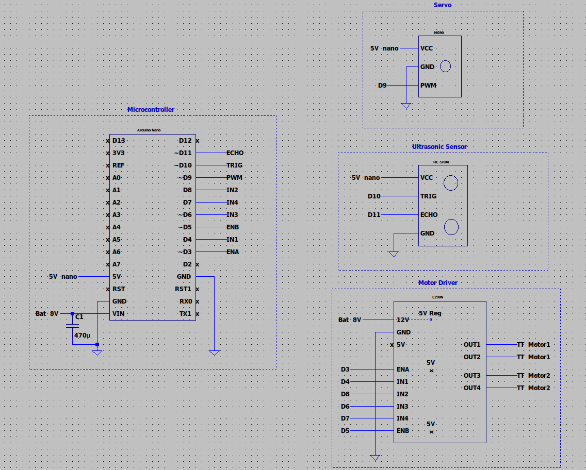

Overview
A self-navigating rover with no remote control
Cornelius is a self-navigating wheeled rover built from scratch on an Arduino Nano. It uses an HC-SR04 ultrasonic sensor mounted on a micro servo to scan for obstacles in real time and autonomously reroute — no remote control, no pre-programmed paths. The robot makes its own decisions.
The chassis and wheels are custom 3D printed in PLA. The project spans mechanical design, electrical wiring, and embedded C++ programming — all done solo.

01 — Mechanical
Chassis & Assembly
The chassis is custom-designed and printed in PLA. The wheels are inspired by a design from Prof. Wolken at Irvine Valley College. The chassis includes ziptie routing holes for motors and wiring, a servo bracket, and mounting tabs for the breadboard, motor driver, and battery holder.
- Front wheels mounted to TT motors with zipties; rear wheels attached via nails through a mounting bracket.
- Servo bracket is slightly loose — tape or a small shim keeps it secure.
- Ultrasonic sensor bracket sourced online and reinforced with screws and washers.
- MG90 metal gear servo used — an SG90 works fine and is recommended for this application.

02 — Electrical
Power & Wiring
Powered by two 18650 Li-ion batteries in series (~8 V total). The Arduino Nano and L298N motor driver have built-in 5 V regulators which power the HC-SR04 and servo. A 470 µF capacitor across the power rail smooths voltage spikes from motor switching.
- TT motors run at 3–6 V — voltage drop across the L298N brings them into safe range.
- Total current draw kept well under 2 A.
- Dupont jumper wires used throughout — solid connections are critical to avoid intermittent failures.

03 — Software
How It Works
The main loop continuously reads distance from the ultrasonic sensor. If the path is clear it drives forward. When an obstacle is detected within 20 cm, it stops, backs up briefly, then sweeps the servo left and right to measure clearance on both sides before turning toward the more open direction.
// Run obstacle avoidance only if an obstacle is detected if (obstacleDetected) { stopMotors(); delay(200); moveBackward(); delay(300); stopMotors(); leftDist = lookLeft(); rightDist = lookRight(); if (leftDist > rightDist) turnLeft(); else turnRight(); delay(400); stopMotors(); }
Movement Logic
| Movement | IN1 | IN2 | IN3 | IN4 | ENA | ENB |
|---|---|---|---|---|---|---|
| Forward | 1 | 0 | 1 | 0 | PWM | PWM |
| Backward | 0 | 1 | 0 | 1 | PWM | PWM |
| Turn Left | 0 | 1 | 1 | 0 | PWM | PWM |
| Turn Right | 1 | 0 | 0 | 1 | PWM | PWM |
| Stop | 0 | 0 | 0 | 0 | 0 | 0 |
04 — Demo
In Action
05 — Reflection
What I Learned
This project sharpened my ability to write clean embedded C++ under tight hardware constraints, think through edge cases in autonomous behavior, and debug physical systems where software issues and mechanical issues can look identical. Structuring the code across multiple .cpp files with a shared header was also good practice for keeping embedded projects organized.